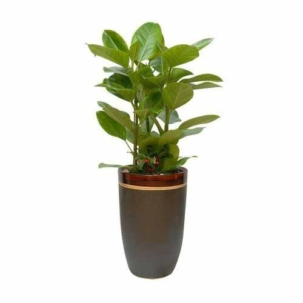

Banyan tree bark
The decoction of the bark of ficus bengalensis is consumed (50 ml) twice a day
INGREDIENTS :
20 gm of ficus bark is heated in 4 glass of water.
When the mixture remained approx. of 1 glass, it may be taken after make it cold.